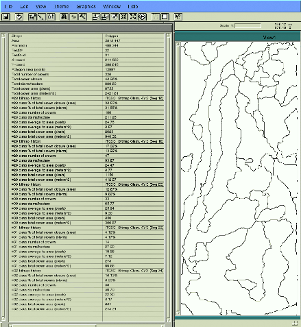

(a)
(a)
 (b)
(b)
 (c)
(c)
by François A. Gougeon, Ph.D.
The automatic or semi-automatic production of individual tree-based inventories as a goal in itself or as a necessary step in obtaining almost automatically the precise forest inventory parameters needed for sustainable forest development.
Note: Information on an individual tree basis could be useful to a variety of forestry-related tasks, from management at the landscape level to biodiversity monitoring, as input to computer models (growth, health, ...) and decision support systems, as well as, in the production of criteria and indicators of sustainable forest management success.
- isolate individual tree crowns (ITC) from each other and from the background vegetation;
- delineate precisely their crown boundaries;
- identify their species; and finally, if needed,
- regroup them into forest stands or environmental strata.
(a)
(b)
(c)
A representative section (100 pixels x 100 lines) of :
a) the original MEIS image (31 cm/pixel)
b) the initial tree crown isolation by the valley-following program ITCVFOL
c) the more complete crown delineation by the rule-based program ITCISOL
In one study (Gougeon, 1995c), 81% of the automatically delineated tree crowns were the same as those obtained by a visual interpretation of the imagery. The automatic tree counts from the image were within 8% of the counts done on the ground.
Various types of multispectral crown-based signatures were analysed for their species recognition capabilities using manually delineated tree crowns (i.e., to be independent of the automatic delineation process) (Gougeon, 1995b). Each classification was repeated ten times to produce a more stable and accurate comparison.
Classification comparison of multispectral signatures for tree crowns individually delineated on high resolution (36 cm) MEIS images (with 50 trees/species, 5 species, 10 classification runs/signature type) Signature Mean species accuracies (MSA) Mean overall types BS JP RP WP WS accuracy (range) ave_sign 90.6 74.4 54.9 69.3 68.1 71.9 (66.7 - 75.4) lit_sign 89.8 68.2 66.9 83.7 62.6 74.3 (70.7 - 78.0) tt_sign 89.5 74.5 59.1 61.7 55.1 67.7 (56.9 - 74.8) si_sign 85.8 71.3 65.7 80.0 63.4 73.3 (68.3 - 79.1) mpc1_s 93.8 71.5 57.9 83.5 72.0 76.4 (72.1 - 80.5) mpc1ev_s 95.7 70.0 64.3 80.0 70.3 76.2 (71.2 - 79.2) mcov_s 89.4 74.1 45.9 71.5 70.3 70.2 (65.1 - 78.1) Av. MSA 90.7 72.0 59.2 75.7 66.0 72.8 BS = Black Spruce WS = White Spruce JP = Jack Pine RP = Red Pine WP = White Pine
See (Gougeon, 1995b) for a description of the signature types.

 (a)
(a)
 (b)
(b)
Multispectral supervised classification into four coniferous species
of tree crowns automatically delineated on:
Green = Red Pine Blue = Red Spruce Yellow = White Pine Red = White Spruce
The image used in (b) was generated from the first image (a), simulating "very" approximatively an image from the next generation of earth observation satellites (OrbView, Space Imaging, EarthWatch).
Average classification accuracies are typically around 74-81% for four coniferous species, depending on the spatial resolution (36 to 100 cm/pixel) (Gougeon, 1995a).
 (a)
(a)
 (b)
(b)
(a) Colour infrared aerial photograph (1:19 000) of the China Creek
region on Vancouver Island,
British Columbia, Canada, digitized to a
spatial resolution of ~60 cm/pixel.
(b) Isolation, delineation, and classification of the tree crowns detected in image (a) (Gougeon, 1996).
Note: In collaboration with MacMillan Bloedel Lmtd., Nanaimo, British Columbia, Canada.

 (3)
(3)
 (4)
(4)
Fig. 3 - Pseudo-colour infrared rendition of a sub-area of a Casi image (60 cm/pixel) of the Nahmint Lake species trial area in the central forest of Vancouver Island, British Columbia, Canada. The delineated areas (in white) correspond to stands judged relatively uniform by a forester. The training and testing areas used for the classification were delineated where species are known to be homogeneous. Their respective species and colours are: Douglas-fir (Pseudotsuga menziesii) in red, grand fir (Abies grandis) in green, amabilis fir (Abies amabilis) in blue, westerm redcedar (Thuja plicata) in orange, and western hemlock (Tsuga heterophylla) in yellow.
Fig. 4 - The individual tree crown (ITC) classification of Figure 3 and its computer generated forest stand outlines using the same colour scheme as Figure 3.

Note: Work was supported in part by funding from Forest Renewal British Columbia (FRBC) awarded to MacMillan Bloedel Ltd., Nanaimo, BC. The Casi data was acquired by Itres Research, Calgary, Alberta, who are collaborating on this FRBC project.

NOTE(Oct 2026): I never got to creating such expert system. However, the maximum-likelihood classifier can take a lot of these aspects into consideration.
Please consult the following : Press here, for a publication list.
Redid page my way (FG) -- Feb. Oct. 2026